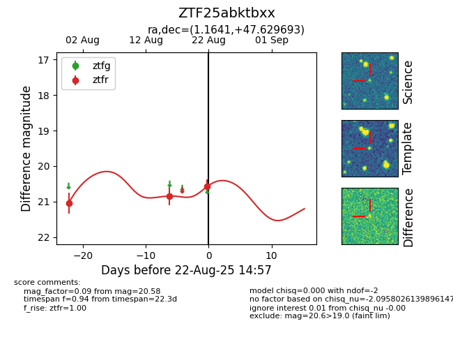

Target ZTF25abktbxx at 2025-08-22 14:57, see:
FINK: fink-portal.org/ZTF25abktbxx
Lasair: lasair-ztf.lsst.ac.uk/objects/ZTF25abktbxx
ALeRCE: alerce.online/object/ZTF25abktbxx
alt names
ZTF25abktbxx (ztf,alerce)
coordinates:
equatorial (ra, dec) = (1.1641,+47.62969)
galactic (l, b) = (114.8200,-14.50387)
photometry
last ztfr=20.58
3 ztfr detections
